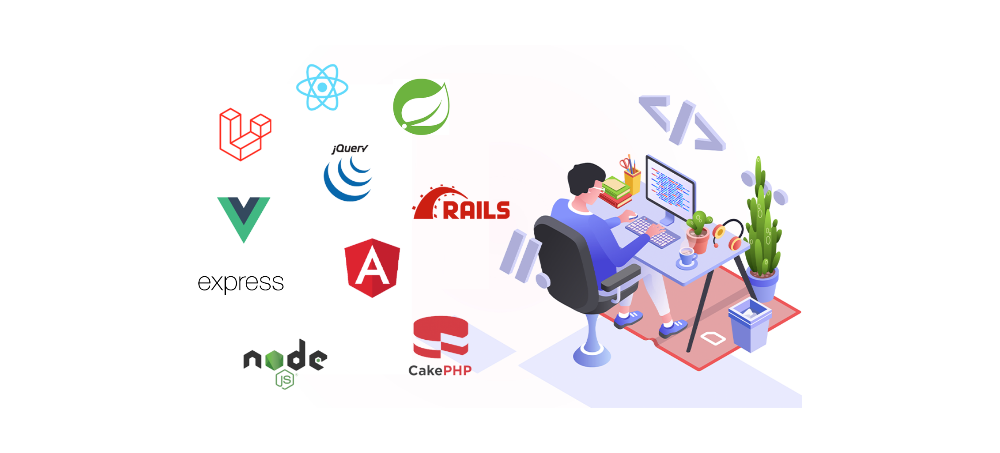

Introduction
Le développement Back-End joue un rôle essentiel dans la création d'applications web modernes. Il permet de gérer la logique serveur, le stockage des données, et les interactions avec l'utilisateur via des bases de données et des API. Cet exposé a pour but de vous fournir une vue d'ensemble des technologies utilisées dans le Back-End, de vous présenter les langages et outils les plus populaires, ainsi que des ressources pour apprendre à développer dans ce domaine.
Qu'est-ce que le Back-End ?
Le développement back-end concerne la gestion des données, la logique métier et l’infrastructure serveur. Il assure le bon fonctionnement des applications en communiquant avec les bases de données et en traitant les requêtes des utilisateurs.
Les Frameworks Back-End

Les frameworks back-end facilitent le développement en offrant une structure de code préétablie, ce qui permet de gagner du temps et d’assurer une meilleure organisation du code. Ces frameworks incluent des bibliothèques et des outils qui simplifient la gestion des requêtes HTTP, l’authentification, les interactions avec les bases de données et bien plus encore.
Voici quelques frameworks populaires pour le développement back-end :
- Django (Python) - Un framework web complet et hautement sécurisé, idéal pour les applications complexes.
- Flask (Python) - Plus léger que Django, il permet de créer des applications web rapidement tout en offrant une grande flexibilité.
- Express.js (Node.js) - Un framework minimaliste pour Node.js, permettant de créer des API et des applications web rapidement.
- Spring Boot (Java) - Un framework pour Java qui facilite le développement d’applications web et microservices avec une approche de configuration simplifiée.
- ASP.NET (C#) - Un framework puissant pour le développement d’applications web et d'APIs avec .NET.
Conclusion
Le développement Back-End est une composante essentielle dans la création d'applications web modernes et évolutives. En maîtrisant les langages de programmation back-end, les bases de données, et les frameworks adaptés, vous pouvez développer des applications robustes et performantes. Nous espérons que cet exposé vous a permis de mieux comprendre ce domaine et de trouver des ressources utiles pour approfondir vos connaissances. Bonne continuation dans votre apprentissage du Back-End !
.jpg)
.jpg)